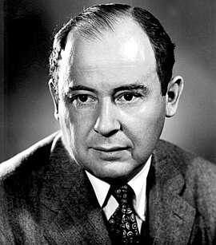

Піонери обчислювальної техніки
В історії обчислювальної техніки було багато видатних особистостей, чиї ідеї та розробки стали основою для сучасних комп'ютерів. Ось кілька з них:
Чарльз Бебідж
Чарльз Бебідж (1791-1871) був англійським математиком і механіком, відомим своєю роботою над аналітичною машиною, яка вважається предком сучасних комп'ютерів. Його концепції, хоча і не були реалізовані за його життя, стали основою для подальших розробок у сфері обчислювальної техніки.

Алан Тюринг
Алан Тюринг (1912-1954) був британським математиком, логіком та криптографом. Його концепція універсальної машини, також відома як машина Тюринга, є теоретичною основою для сучасних комп'ютерів. Він також зробив значний внесок у криптоаналіз під час Другої світової війни, розшифрувавши німецькі коди.
_in_1936_at_Princeton_University.jpg)
Ада Лавлейс
Ада Лавлейс (1815-1852) була британською математикою і першою програмісткою в історії. Вона працювала над аналітичною машиною Чарльза Бебіджа і написала перший відомий алгоритм для цієї машини, що робить її першим програмістом у світі.

Джон фон Нейман
Джон фон Нейман (1903-1957) був угорським математиком і фізиком, який розробив архітектуру фон Неймана, що є основою для багатьох сучасних комп'ютерів. Його архітектура включає зберігання програми і даних в одній і тій же пам'яті, що спростило програмування і розробку комп'ютерів.
Клода Шеннон
Клода Шеннон (1916-2001) був американським математиком і електротехніком, який вважається батьком теорії інформації. Його роботи стали основою для розробки сучасних комунікаційних систем та криптографії.